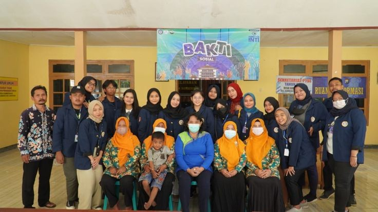
Bakti Sosial Desa kotasan
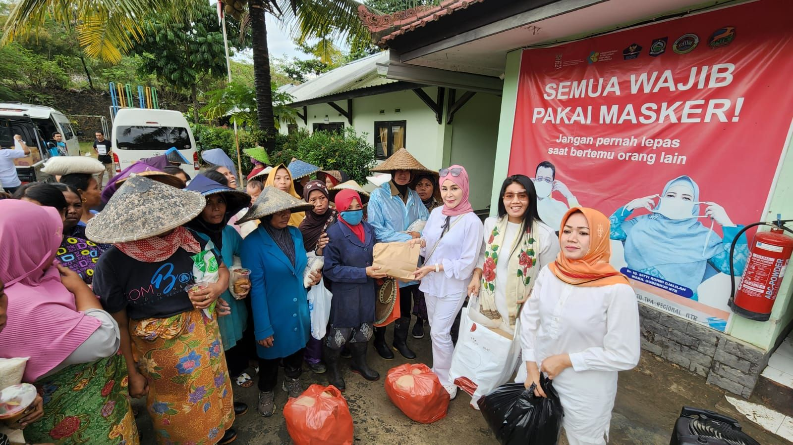
Pembagian Sembako Desa Kotasan
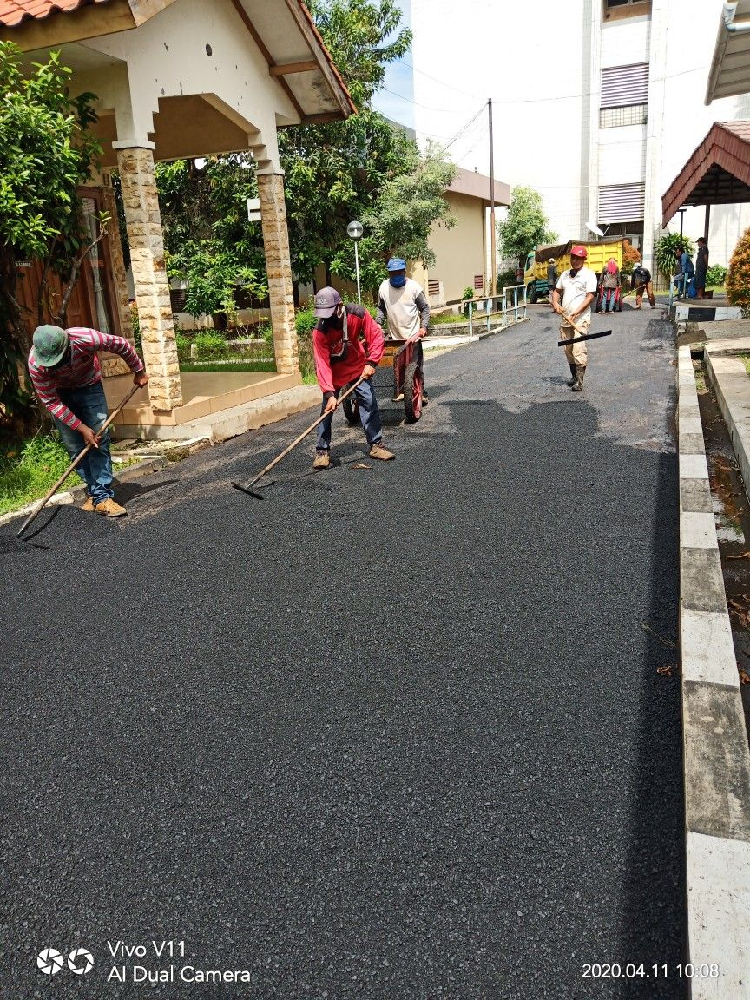
perbaikan akses jalan ke Pertanian di Desa Kotasan lahan Persawahan
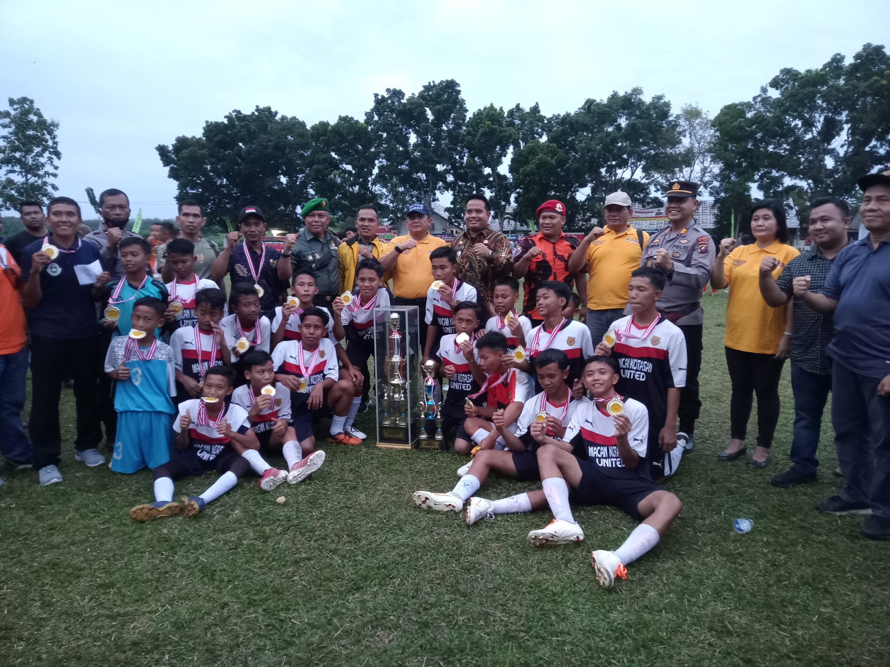
JUARA CAMPION CUP
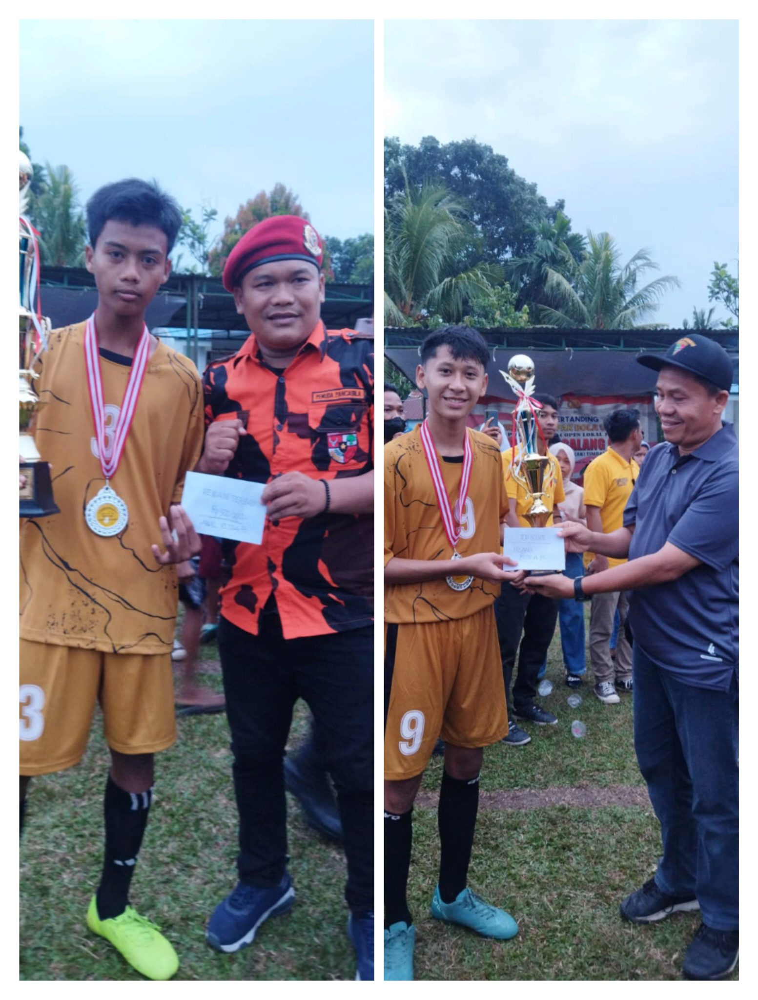
JUARA PERTANDINGAN PERSAHABATAN
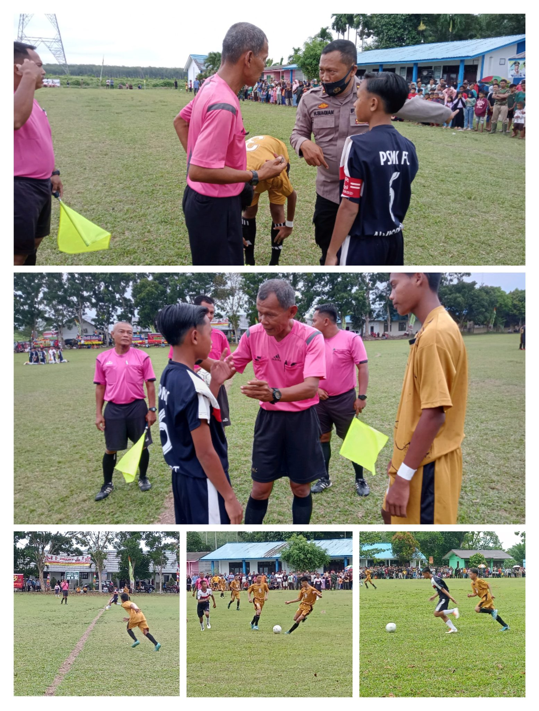
JUARA TURNAMEN SEPAK BOLA
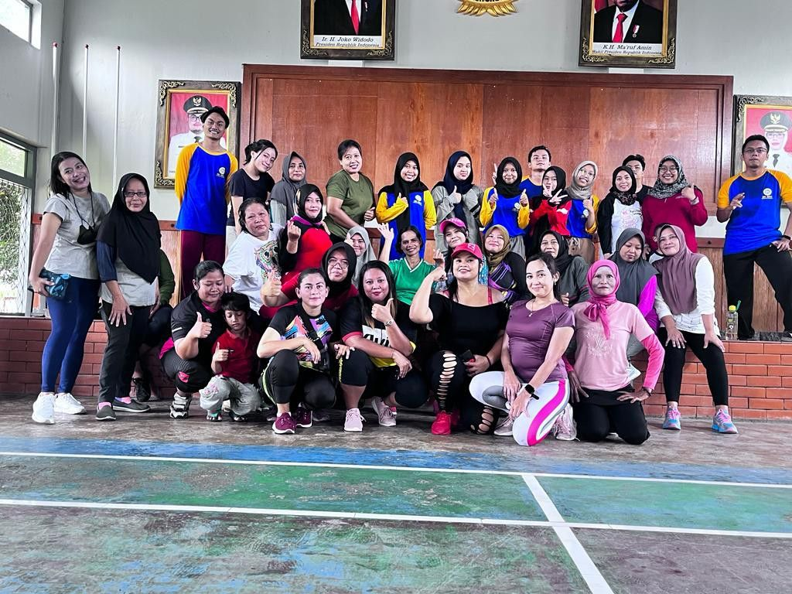
senam bersama ibu pkk desa kotasan
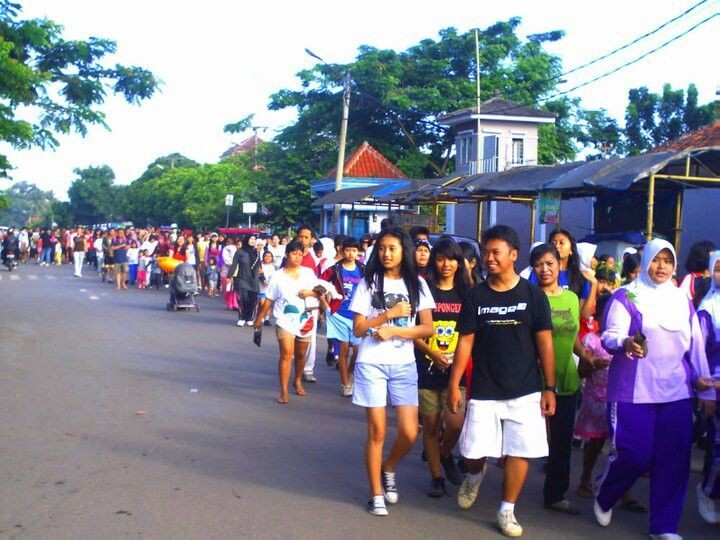
Gerak jalan bersama antar warga desa kotasan
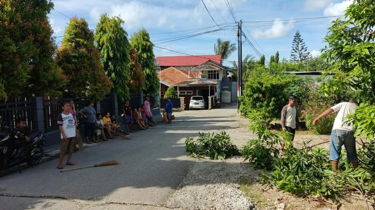
Gotong Royong Warga Desa Kotasan
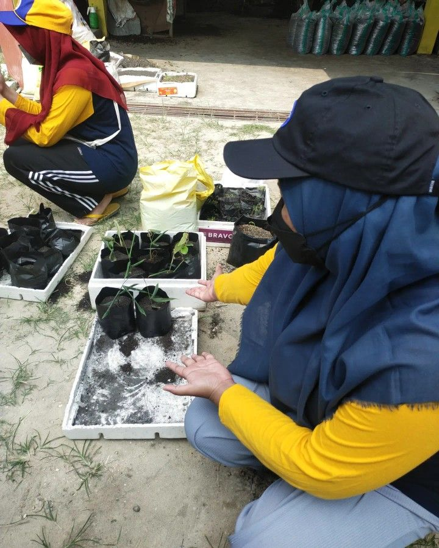
Kegiatan menanam TOGA di kebun percobaan LITERASI di desa Kotasan
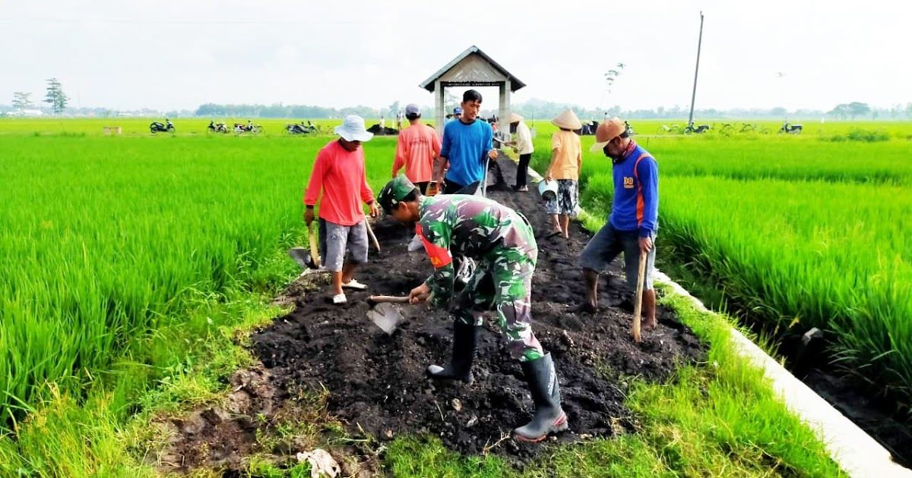
TNI dan Masyarakat Gotong royong Membangun tempat ibadah
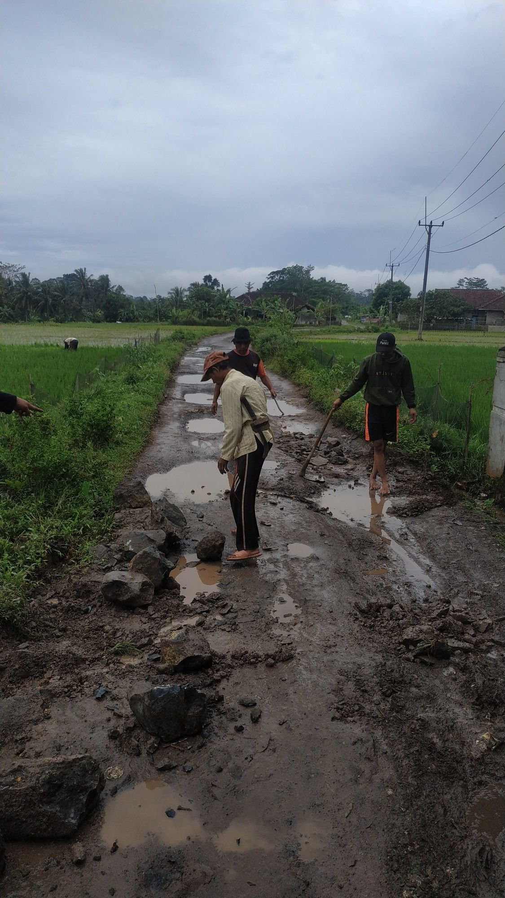
Kegiatan Kerja bakti memperbaiki jalan yang rusak
Informasi Seputar desa Kotasan